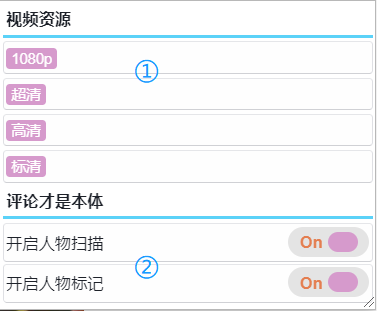

使用说明
- 插件安装完成之后,在浏览器右上角会多出一个图标

- 点击图标后会弹出一个菜单
- 进入Acfun视频播放页或者文章页面后，在屏幕的右边会出现一个按钮
- 点击【助手】按钮之后，会弹出一个功能菜单
- 当开启人物标记功能后，就可以对用户添加标记，具体步骤如下：
- 当开启人物扫描功能后，你之前添加的用户标记就可以在用户的名字后面显示，如下图：

点击最上面的开关可以打开或者关闭插件的所有功能

第①部分只有视频播放页面才有，选择喜欢的清晰度点击相应的按钮，即可开始下载
第②部分视频和文章页面都有
第②部分视频和文章页面都有
第一步：点击下图红色方框内的三个点按钮

第二步：点击下图红框内的【标记】按钮

第三步：在弹出框内输入标记内容，点击确定后保存


注意:
- 用户标记功能只对【新版评论】有效
- 如果在屏幕右侧没有出现【助手】按钮，请尝试刷新页面
- 下载过程中不要关闭页面，否则下载将会停止
- 如果有任何反馈或者建议，请加QQ群